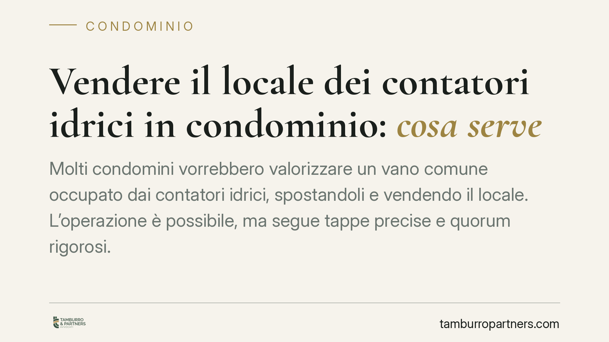

Vendere il locale dei contatori idrici in condominio: cosa serve
Molti condomini vorrebbero valorizzare un vano comune occupato dai contatori idrici, spostandoli e vendendo il locale. L'operazione è possibile, ma segue tappe precise e quorum rigorosi. Chi salta un passaggio rischia di veder annullata la delibera. Vediamo cosa prevede il Codice civile e quali cautele adottare prima di avviare la trattativa.

Il caso tipico
In molti edifici esiste un piccolo locale comune che ospita i contatori idrici dei singoli appartamenti. Capita che l'assemblea valuti di liberarlo, spostando i misuratori altrove, per poi vendere il vano e destinare il ricavato a lavori o a riparto tra i condomini.
Quel vano non è un semplice ripostiglio. Ospita impianti comuni e, di regola, rientra tra le parti comuni dell'edificio ai sensi dell'art. 1117 cod. civ. Proprio per questa natura, la sua gestione segue regole più stringenti rispetto a un bene di proprietà esclusiva.
Inquadramento normativo
Due sono i piani da tenere distinti.
Il primo riguarda la modifica della destinazione d'uso del bene comune. L'art. 1117-ter cod. civ., introdotto dalla riforma del condominio (L. 220/2012), consente di modificare la destinazione d'uso delle parti comuni "per soddisfare esigenze di interesse condominiale". La norma richiede un quorum elevato: il voto favorevole di un numero di condomini che rappresenti i quattro quinti dei partecipanti al condominio e i quattro quinti del valore dell'edificio. È un quorum rafforzato, non la semplice maggioranza assembleare.
Il secondo piano riguarda l'alienazione del locale. La vendita di un bene comune è un atto che eccede l'ordinaria amministrazione. Per i beni comuni non suscettibili di comodo godimento separato, la giurisprudenza ritiene necessario il consenso di tutti i condomini, in linea con i principi dell'art. 1108 cod. civ. in tema di atti dispositivi sulla cosa comune. La modifica di destinazione, infatti, non equivale alla dismissione del bene: una cosa è cambiarne l'uso, altra cosa è cederlo a terzi.
Le tappe dell'operazione
Ne deriva una sequenza obbligata.
Prima tappa. L'assemblea delibera la modifica della destinazione d'uso del vano con il quorum dei quattro quinti ex art. 1117-ter cod. civ. Senza questo passaggio, i contatori non possono essere legittimamente rimossi.
Seconda tappa. Si procede allo spostamento fisico dei contatori idrici, individuando una collocazione tecnicamente idonea e accessibile per letture e manutenzioni.
Terza tappa. Si arriva alla vendita vera e propria. È qui che si colloca il baluardo decisivo: trattandosi di atto dispositivo su un bene comune, serve il consenso di tutti i proprietari. Il singolo contrario può quindi bloccare la cessione anche dopo che la destinazione d'uso è stata modificata a maggioranza qualificata.
In sintesi: con i quattro quinti si cambia l'uso del locale; per venderlo, invece, l'ostacolo dell'unanimità resta. Chi punta solo sul quorum dell'art. 1117-ter rischia di avviare un'operazione che poi non riesce a chiudere.
Implicazioni pratiche
Per l'amministratore e per i condomini interessati le conseguenze sono concrete.
Una delibera di vendita approvata senza l'unanimità è esposta a impugnazione e, in caso di contenzioso, può bloccare l'intera operazione dopo che le spese tecniche sono già state sostenute.
Vanno inoltre considerati i costi dello spostamento impianti, le autorizzazioni del gestore idrico, le spese notarili e la fiscalità sulla plusvalenza. Promettere ai condomini un ricavo netto senza considerare queste voci espone a contestazioni.
Cosa fare in concreto
- Verificate la titolarità del vano: accertate, con l'ausilio di un tecnico, che il locale sia effettivamente parte comune e non di proprietà esclusiva.
- Convocate l'assemblea con ordine del giorno chiaro, distinguendo la delibera di modifica destinazione (art. 1117-ter) dall'eventuale successiva vendita.
- Raccogliete preventivamente il consenso di tutti i condomini sulla cessione, prima di sostenere spese tecniche: senza unanimità, l'operazione non si chiude.
- Richiedete un parere al gestore idrico sulla nuova collocazione dei contatori e sulle autorizzazioni necessarie.
- Quantificate in anticipo costi e profili fiscali, così da deliberare su cifre realistiche e non su un ricavo teorico.
Consigliamo di impostare l'operazione per fasi documentate, verbalizzando ogni passaggio: è il modo più efficace per ridurre il rischio di impugnazioni e di stalli in sede di rogito.
Disclaimer
Contributo informativo a cura di Tamburro & Partners - Avv. Giuseppe Tamburro. Non costituisce parere legale.
Ogni condominio ha una storia a sé.
Se gestisci un'amministrazione e vuoi un confronto su una specifica questione condominiale, scrivi allo studio. Ti rispondiamo entro un giorno lavorativo.